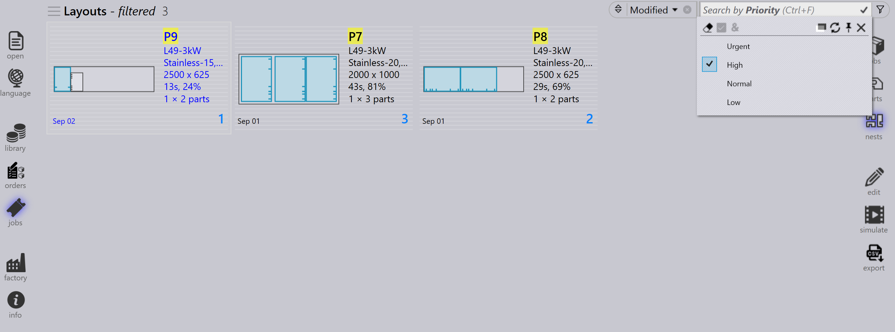

Filtros de trabajos
Los filtros de la página de trabajos le ayudan a localizar trabajos, piezas activas y anidamientos mostrando solo los elementos que coinciden con las condiciones seleccionadas. Simplifican la búsqueda, clasificación y gestión de trabajos o piezas, mejorando la eficiencia general en el flujo de trabajo.

Ejemplos de filtros disponibles
Prioridad y Vencimiento el
-
El filtro Prioridad le permite buscar y mostrar piezas o trabajos según su prioridad asignada (Urgente, Alto, Bajo, Normal).
-
Cuando selecciona un nivel de prioridad particular, solo las piezas con esa prioridad específica se resaltarán o mostrarán en los resultados.
-
Por ejemplo, si elige Prioridad Alto, el sistema filtrará y resaltará solo las piezas marcadas como Prioridad Alta en el anidamiento.

-
El filtro Vencimiento el le permite buscar y mostrar piezas o trabajos según sus fechas asignadas.
-
Cuando selecciona una fecha de vencimiento particular, solo las piezas con esa fecha de vencimiento específica se resaltarán o mostrarán en los resultados.
-
Además de los filtros de fecha de vencimiento predefinidos como Hoy, Ayer, Mañana etc., también puede ingresar valores/rangos de fechas personalizados en formato yymmdd en el cuadro de texto de búsqueda.
-
También puede usar expresiones con operadores de desigualdad (<, <=, >, >=, =) seguidas del valor de fecha. Ejemplo: >=250901 buscaría todos los elementos que vencen en o después del 1 de septiembre de 2025.

|
Si la lista de filtros oculta el contenido de búsqueda, puede hacerla transparente
usando el comando Alternar opacidad|*Clic en botón derecho de ratón*
|
Nombre de la pieza/ Layout name
-
El filtro Nombre de la pieza estará disponible en las páginas de trabajos y anidamiento.
-
A medida que escribe el nombre de la pieza, se muestra una lista de sugerencias para ayudar a seleccionar la pieza correcta rápidamente.
-
Seleccionar uno o más elementos de la lista de sugerencias reduce los resultados de búsqueda a solo las piezas seleccionadas.
-
En la página Jobs, este comportamiento se extiende para incluir nombres de disposición, permitiendo a los usuarios buscar por nombre de pieza o nombre de disposición.

Resto
-
Use el filtro Resto para buscar disposiciones según la disponibilidad de retazos.
-
El menú desplegable muestra las siguientes opciones:
-
Sin restos - lista disposiciones donde no se crea retazo.
-
Existe - lista disposiciones donde ya existe un retazo.
-
Añadido - lista disposiciones donde se agrega un nuevo retazo.
-
-
Ayuda a identificar y gestionar materiales de hoja sobrantes de manera eficiente.